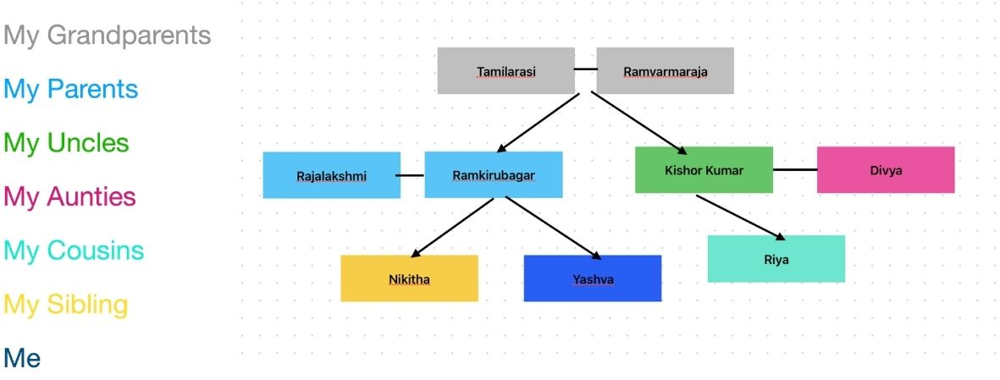
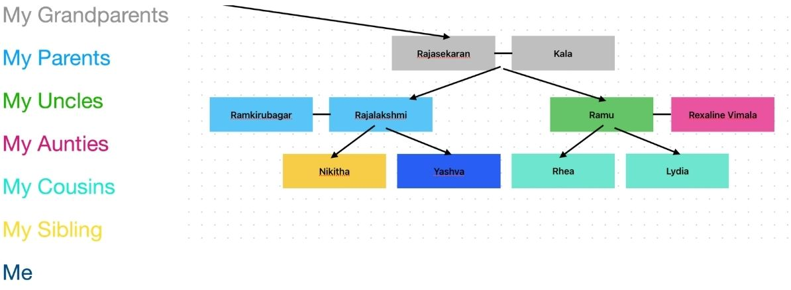

The diagram above shows me, my cousins, my aunties and uncles, my grandparents, and my great grandparents. I am very close with all of my family although I live in Australia and all of them are in India. This is very difficult to talk with them as there is a 5 hour time difference and is not the same as talking with them in person. I have made strong bonds with my cousins in recent years, because I could chat with them on my personal phone. I learnt about their past experiences and hardships they have gone through especially my older cousins. This taught me some things on how to deal with work and moralities. Such as developing good habits like exercising and being a organised and responsible person. I also learnt on how my cousins deal with problems by having the skill of perseverance and rather than running away from their problems, they face them.